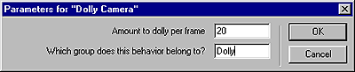

What's New in Director 8.5 > Director 8.5 Tutorial > Use the camera > Add the Dolly Camera behavior
What's New in Director 8.5 > Director 8.5 Tutorial > Use the camera > Add the Dolly Camera behavior |
Add the Dolly Camera behavior
Another way to manipulate the view of a 3D world during movie playback is to dolly the camera. Dollying is a motion picture technique in which the camera's position changes without changing the direction of the lens itself (as if the camera were transported forward and backward, without turning, on a tripod with wheels).
For dollying, you will drag the behavior to the Score rather than the Stage.
1 |
If the Score is not open, select Window > Score. |
2 |
In the Library palette, verify that 3D > Actions is selected. |
3 |
Drag the Dolly Camera action from the Library palette to the Magic tricks sprite in the Score. Release the mouse button when the pointer appears with a plus sign and empty rectangle. |
4 |
In the Parameters for Dolly Camera dialog box, specify the following: |
In the "Amount to dolly per frame" text box, type 20. |
|
The Dolly Camera action moves in world units, which are units of measurement unique to the 3D world. |
|
In the "Which group does this behavior belong to?" text box, type Dolly. Then click OK.
 |
|